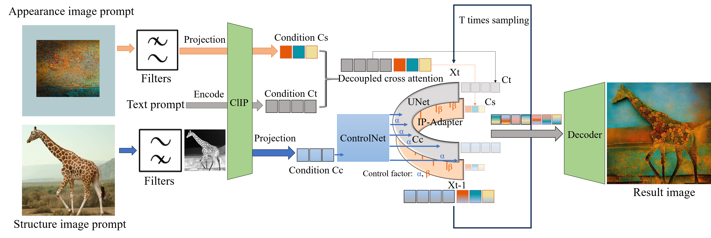

Abstract
In controllable generation tasks, flexibly manipulating the generated images to attain a desired appearance or structure based on a single input image cue remains a critical and longstanding challenge. Achieving this requires the effective decoupling of key attributes within the input image data, in order to get representations accurately. Previous research has concentrated predominantly on disentangling image attributes within feature space. However, the complex distribution present in real-world data often makes the application of such decoupling algorithms to other datasets challenging. Moreover, the granularity of control over feature encoding frequently fails to meet specific task requirements. Upon scrutinizing the characteristics of various generative models, we have observed that the input sensitivity and dynamic evolution properties of the diffusion model can be effectively fused with the explicit decomposition operation in pixel space. This allows the operation that we design and use in pixel space to achieve the desired control effect on the specific representation in the generated results. This integration enables the image processing operations performed in pixel space for a specific feature distribution of the input image, and can achieve the desired control effect in the generated results. Therefore, we propose FilterPrompt, an approach to enhance the effect of controllable generation. It can be universally applied to any diffusion model, allowing users to adjust the representation of specific image features in accordance with task requirements, thereby facilitating more precise and controllable generation outcomes. In particular, our designed experiments demonstrate that the FilterPrompt optimizes feature correlation, mitigates content conflicts during the generation process, and enhances the effect of controllable generation. Therefore, we propose FilterPrompt, an approach to enhance the model control effect. It can be universally applied to any diffusion model, allowing users to adjust the representation of specific image features in accordance with task requirements, thereby facilitating more precise and controllable generation outcomes. In particular, our designed experiments demonstrate that the FilterPrompt optimizes feature correlation, mitigates content conflicts during the generation process, and enhances the model's control capability.
Applications

Style transfer tasks: Our focus is to obtain the low-level texture features from the style image without semantic correspondence and then render it to the content image.

Appearance transformation tasks: A total of six domains (cat, dog, wild, bird, airplane, car), we showcase the effects achieved by the baseline architecture with filtering combined operation in local, object-centric, and full-image-level appearance transfer tasks.
Code
[GitHub]
Paper
FilterPrompt: Guiding Image Transfer in Diffusion Models
Xi Wang and Yichen Peng and Heng Fang and Haoran Xie and Xi Yang and Chuntao Li
@misc{wang2024filterprompt,
title={FilterPrompt: Guiding Image Transfer in Diffusion Models},
author={Xi Wang and Yichen Peng and Heng Fang and Haoran Xie and Xi Yang and Chuntao Li},
year={2024},
eprint={2404.13263},
archivePrefix={arXiv},
primaryClass={cs.CV}
}
This template was originally made by Phillip Isola and Richard Zhang for a colorful ECCV project. It was adapted to be mobile responsive by Jason Zhang for PHOSA. The code can be found here.